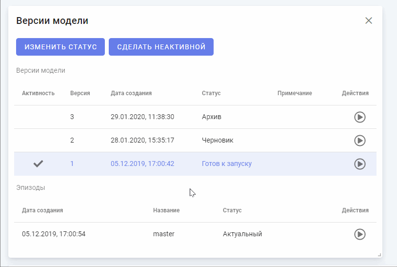
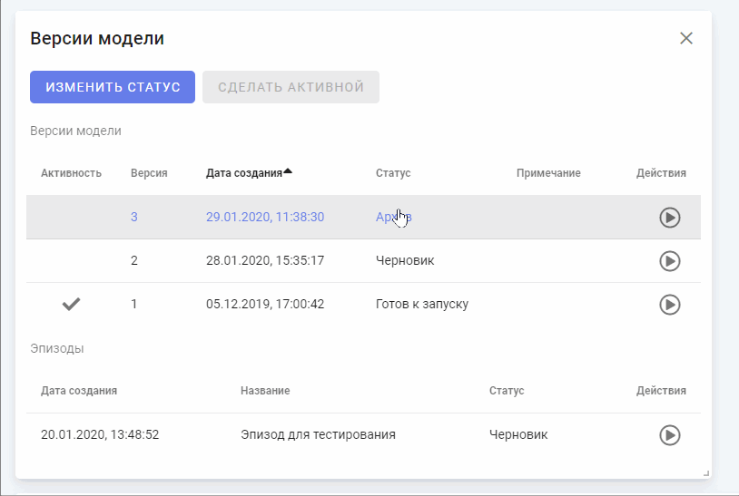
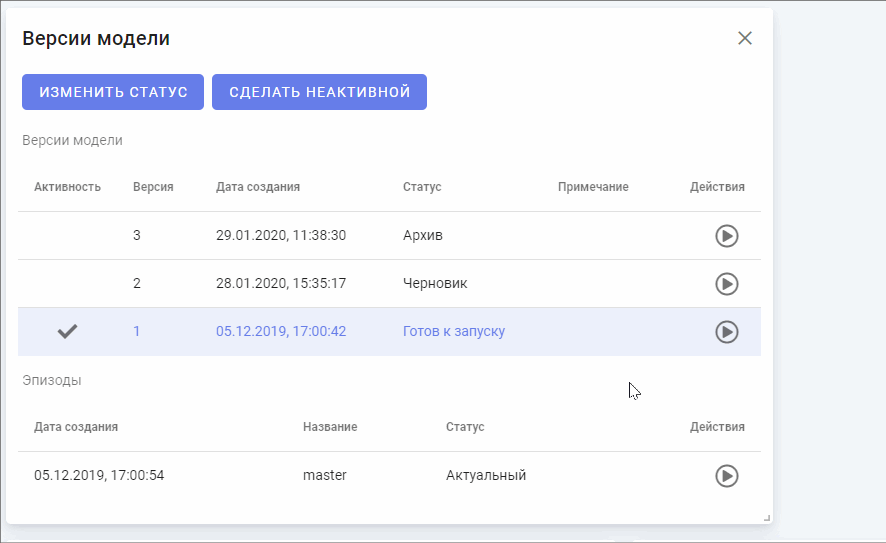

Виджет предназначен для отображения версий модели.
Виджет состоит из следующих элементов:
Кнопка предназначена для изменения статуса версии модели и применима только для выбранной версии модели. При нажатии на кнопку откроется форма изменения статуса версии. В форме необходимо выбрать нужный статус и нажать на кнопку "Изменить". Доступные статусы описаны в разделе "Версии модели":

Кнопка предназначена для переключения активности версии модели и доступна только для версии со статусом "Готов к запуску". В одной модели может быть только одна активная версия. При нажатии на кнопку активность версии отобразиться галочкой в столбце "Активность" (перечень статусов модели описан в разделе "Модель").

Область содержит список версий модели и список эпизодов версии модели узла.
Действия с версиями:
См. Кнопка "Сделать неактивной" / "Сделать активной"
Для открытия определенной версии модели необходимо выбрать версию из списка, нажав на строку с информацией о ней. Далее необходимо нажать на соответствующую кнопку . Затем страница обновится и откроется выбранная версия.

Для открытия определенного эпизода версии модели необходимо выбрать версию модели из списка, нажав на строку с информацией о ней. Далее в списке соответствующих эпизодов необходимо нажать на кнопку . Затем страница обновится и откроется выбранный эпизод.